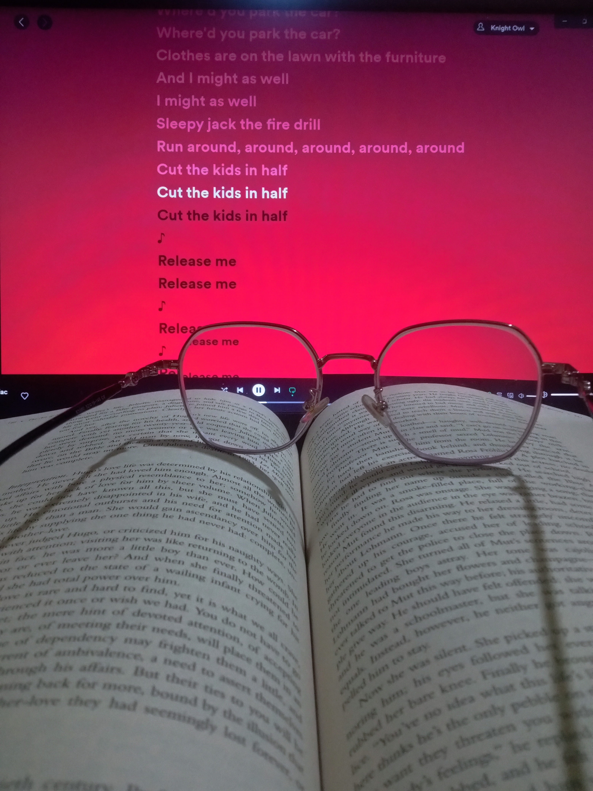

- Cooking
- Drawing
- Reading
- Meditation

- Workout

-
A healthy body is a healthy mind. Personally, I believe that working out or exercising is a sort of meditation since it allows us to ignore distractions and focus on strengthening our bodies. It assists us in maintaining discipline and improving our physicality.
- Chess

-
Chess is a one-on-one game, it is one of the oldest games still prevalent till today. it is a game that completely relies on intellectual capacity to make difficult decisions, sacrifice for bigger advantages, and foresee the opponent's future movements. It effectively simulates the war on a very small scale. which is why I adore chess. If you lose, it is entirely your faul. In the game of chess, there is no such a thing as luck.

I always begin my day with a 10-min of meditation session. Meditation helps an individual to manage stree and anxiety, controlling emotions, providing clarity and focus